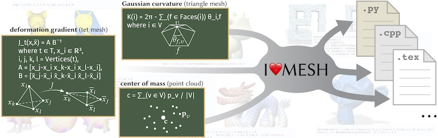

I❤️️MESH is a DSL for mesh processing which resembles notation commonly used in visual and geometric computing, automating the mechanical process of converting notation into code. I❤️️MESH has a flexible notation for specifying and manipulating mesh neighborhoods in a cellular complex, internally represented by standard operations on sparse boundary matrices.
BibTeX:
@article{li2024iheartmesh,
author = {Li, Yong and Kamil, Shoaib and Crane, Keenan and Jacobson, Alec and Gingold, Yotam},
title = {{I Heart MESH}: {A} {DSL} for Mesh Processing},
journal = {ACM Trans. Graph.},
year = {2024},
month = {oct},
volume = {43},
number = {5},
articleno = {154},
numpages = {17},
doi = {10.1145/3662181},
issn = {0730-0301},
keywords = {Meshes, geometry processing, domain-specific language},
abstract = {Mesh processing algorithms are often communicated via concise mathematical notation (e.g., summation over mesh neighborhoods). However, conversion of notation into working code remains a time-consuming and error-prone process, which requires arcane knowledge of low-level data structures and libraries—impeding rapid exploration of high-level algorithms. We address this problem by introducing a domain-specific language (DSL) for mesh processing called I Heart MESH, which resembles notation commonly used in visual and geometric computing and automates the process of converting notation into code. The centerpiece of our language is a flexible notation for specifying and manipulating neighborhoods of a cell complex, internally represented via standard operations on sparse boundary matrices. This layered design enables natural expression of algorithms while minimizing demands on a code generation backend. In particular, by integrating I Heart MESH with the linear algebra features of the I Heart LA DSL and adding support for automatic differentiation, we can rapidly implement a rich variety of algorithms on point clouds, surface meshes, and volume meshes.},
}
See also
the publisher (ACM) web page.